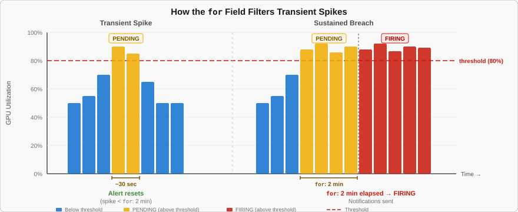
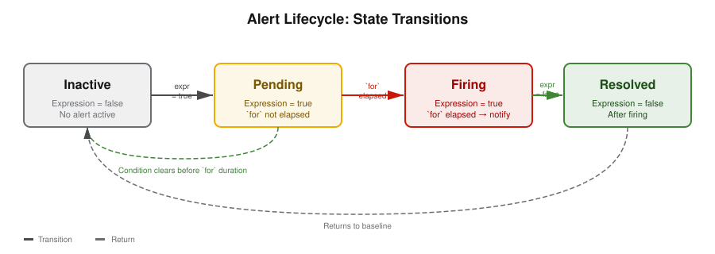
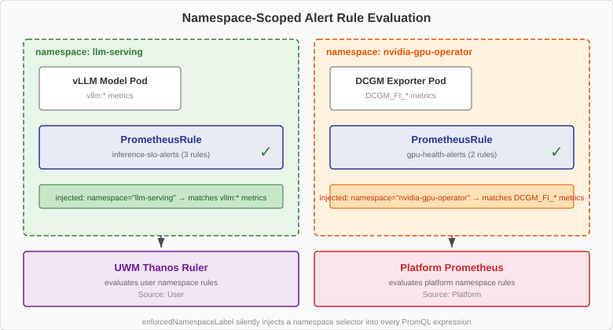

Anatomy of a PrometheusRule
Alerts on OpenShift are defined as Kubernetes custom resources.
The PrometheusRule CR is where you write the PromQL expression that defines the condition, the stabilization window that prevents false positives, and the labels and annotations that determine how the alert is routed and what information it carries.
This page walks through the structure of a PrometheusRule, the alert lifecycle it drives, and a critical OpenShift concept — namespace enforcement — that determines where your rules must live.
The YAML Structure
A PrometheusRule uses the monitoring.coreos.com/v1 API group.
Here is a complete example:
apiVersion: monitoring.coreos.com/v1 (1)
kind: PrometheusRule (2)
metadata:
name: inference-slo-alerts (3)
namespace: llm-serving (4)
spec:
groups: (5)
- name: inference-slo (6)
rules:
- alert: InferenceQueueBacklog (7)
expr: | (8)
vllm:num_requests_waiting > 5
for: 1m (9)
labels: (10)
severity: warning
annotations: (11)
summary: "Inference queue backlog detected"
description: "{{ $value }} requests waiting in the vLLM inference queue."| 1 | The monitoring.coreos.com/v1 API group — used by the built-in Cluster Monitoring Operator |
| 2 | The PrometheusRule custom resource type |
| 3 | Resource name — descriptive, lowercase with hyphens |
| 4 | Namespace — must match the namespace of the metrics being queried (explained in detail below) |
| 5 | Rules are organized into groups |
| 6 | Group name — organizational only, does not affect evaluation |
| 7 | Alert name — appears in the OpenShift Console and Alertmanager notifications |
| 8 | The PromQL expression that defines when the alert fires |
| 9 | Stabilization window — how long the condition must be continuously true |
| 10 | Labels for routing and severity classification |
| 11 | Annotations for human-readable context with template variables |
This course uses monitoring.coreos.com/v1, which is the API group for the built-in Cluster Monitoring Operator (CMO). Do not confuse this with monitoring.rhobs/v1, which is a different API group used by the Cluster Observability Operator (COO).
|
The expr Field
The expr field contains the PromQL expression that Prometheus evaluates continuously — every 30 seconds by default.
The alert fires when the expression returns a non-empty result.
This is an important distinction: the expression does not return true or false.
It returns the set of time series where the condition is met.
If GPU 0 is at 92% utilization and your expression is DCGM_FI_DEV_GPU_UTIL > 80, Prometheus returns {gpu="0", instance="node-1"} 92.
If no GPU is above 80%, the expression returns an empty result and the alert stays inactive.
Here are the three query patterns from PromQL Fundamentals, applied to alerting expressions:
Gauge comparison — fires if any GPU exceeds 80%:
DCGM_FI_DEV_GPU_UTIL > 80Filtered gauge — checks only the llm-serving namespace:
vllm:num_requests_waiting{namespace="llm-serving"} > 5Histogram quantile — fires if p95 time to first token exceeds 1 second:
histogram_quantile(0.95,
sum by(le) (
rate(vllm:time_to_first_token_seconds_bucket{namespace="llm-serving"}[5m])
)
) > 1The for Field
The for field is the most critical field for preventing false positives.
It specifies how long the expr must be continuously true before the alert transitions from Pending to Firing.
Consider what happens without a stabilization window.
A single large inference request can briefly spike GPU utilization to 90%.
Without for, this single-request spike triggers the alert immediately — even though the GPU returns to normal seconds later.
With dozens of requests per hour, you would get dozens of false alerts per hour.
With for: 2m, only sustained utilization above the threshold triggers the alert.
Brief per-request spikes are ignored.
If the metric dips below the threshold for even one scrape during the window, the pending timer resets to zero.
The following diagram illustrates how the stabilization window filters out transient spikes:

Choosing the Right Duration
| Duration | Effect | Good For |
|---|---|---|
|
Very fast detection, many false positives |
Hardware emergencies such as power failure or GPU errors |
|
Fast detection, some false positives |
Saturation signals like |
|
Balanced — the default for most alerts in this course |
Utilization thresholds and latency SLOs |
|
Slow detection, very few false positives |
Trend alerts for capacity planning and gradual degradation |
|
Very slow, practically zero false positives |
Rarely used — too slow for operational alerts |
The Alert Lifecycle
Every alert transitions through a well-defined set of states:

| State | What Is Happening | What the Engineer Sees |
|---|---|---|
Inactive |
Expression returns empty — condition is not met |
Nothing — the alert is not shown or appears grayed out in the Console |
Pending |
Expression is true, but the |
Yellow or orange indicator — condition detected, waiting to confirm it is sustained |
Firing |
Expression has been continuously true for longer than the |
Red indicator — notification sent to Alertmanager |
Resolved |
Expression returns empty after previously firing |
Green indicator briefly — the issue has cleared |
The transition from Pending back to Inactive is what makes the for field so valuable. A transient spike enters Pending state, but if the condition clears before the timer elapses, the alert silently returns to Inactive. No notification is sent. No engineer is bothered.
|
Labels and Annotations
Labels and annotations serve different purposes in an alert rule.
Labels: Routing and Grouping
Labels are machine-readable metadata used by Alertmanager to decide where to send the notification:
labels:
severity: warning # Determines urgency and notification channel
team: ai-platform # Optional: routes to a specific team's channelThe severity label is the most important.
Alertmanager uses it to route critical alerts to PagerDuty (immediate page) and warning alerts to a Slack channel (reviewed during business hours).
Annotations: Human-Readable Context
Annotations provide context for the human who receives the notification:
annotations:
summary: "GPU utilization above 80%"
description: "GPU {{ $labels.gpu }} on {{ $labels.instance }} is at {{ $value }}%."The double-brace syntax ({{ }}) uses Go templates.
Prometheus fills in these variables with actual values when the alert fires:
-
{{ $labels.gpu }}— the value of thegpulabel on the matching time series -
{{ $labels.instance }}— the node where the metric was scraped -
{{ $value }}— the current numeric value of the expression
This transforms a generic message like "GPU utilization is high" into a specific, actionable message like "GPU 0 on gpu-node-1 is at 92% utilization."
Always include {{ $value }} in at least one annotation. An alert that says "GPU utilization is high" forces the engineer to open a dashboard just to find out how high. An alert that says "GPU utilization is at 92%" gives immediate context.
|
Namespace Enforcement
This is a critical OpenShift concept that causes silent failures when misunderstood.
OpenShift’s User Workload Monitoring (UWM) enforces a security feature called enforcedNamespaceLabel.
The Thanos Ruler silently injects namespace="<rule-namespace>" into every PromQL vector selector in user-namespace PrometheusRules.
This means a PrometheusRule can only match metrics that carry its own namespace label.
The Problem
vLLM metrics and GPU metrics carry different namespace labels:
vLLM metrics carry: namespace="llm-serving"
DCGM GPU metrics carry: namespace="nvidia-gpu-operator"If you put a GPU alert rule like DCGM_FI_DEV_GPU_UTIL > 80 in the llm-serving namespace, UWM rewrites the expression to:
DCGM_FI_DEV_GPU_UTIL{namespace="llm-serving"} > 80This silently matches zero series — DCGM metrics do not have namespace="llm-serving".
The rule evaluates successfully but always returns empty.
The alert stays Inactive forever.
There are no errors, no warnings in the logs — it simply does not work.
The Solution: Two PrometheusRule Resources

You must split alert rules into separate PrometheusRule resources, each deployed to the namespace that matches its metrics:
| PrometheusRule | Namespace | Evaluated By | Reason |
|---|---|---|---|
|
|
Platform Prometheus |
DCGM metrics carry |
|
|
UWM Thanos Ruler |
vLLM metrics carry |
The nvidia-gpu-operator namespace has the label openshift.io/cluster-monitoring=true, so its PrometheusRules are evaluated by the platform Prometheus, not UWM.
GPU alerts appear under Source: Platform in the OpenShift Console alerting UI.
| Namespace mismatch is the most common "silent failure" with PrometheusRules on OpenShift. There are no error messages — the rule simply never fires. If an alert stays Inactive when you expect it to fire, check whether the metric’s namespace label matches the PrometheusRule’s namespace. If they do not match, the rule will never fire. |